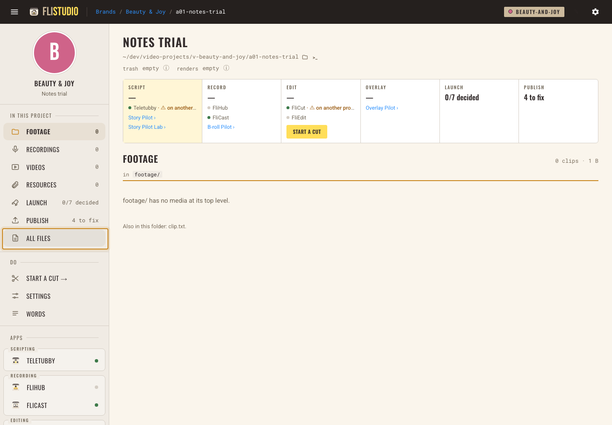
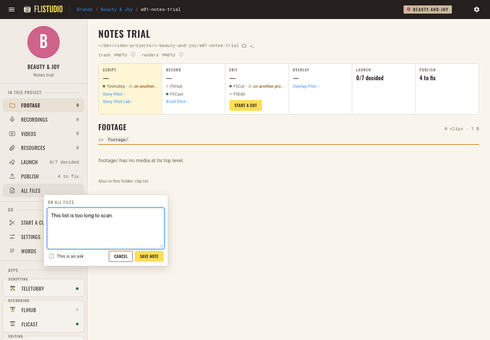
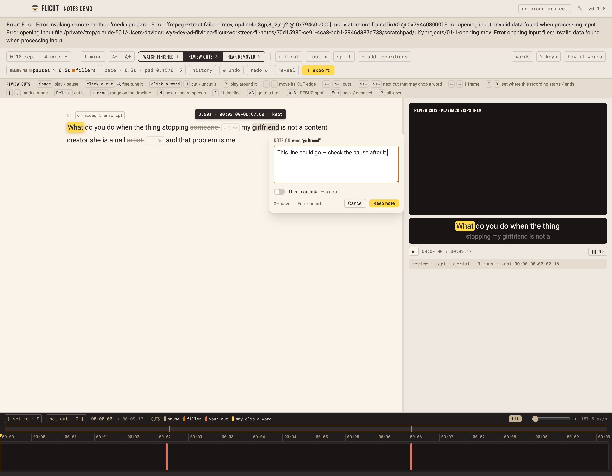
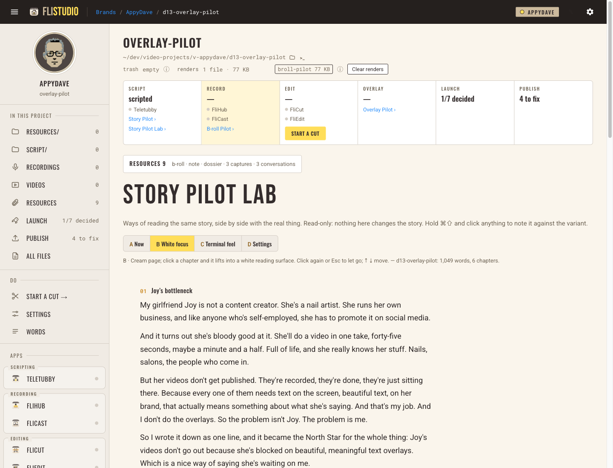
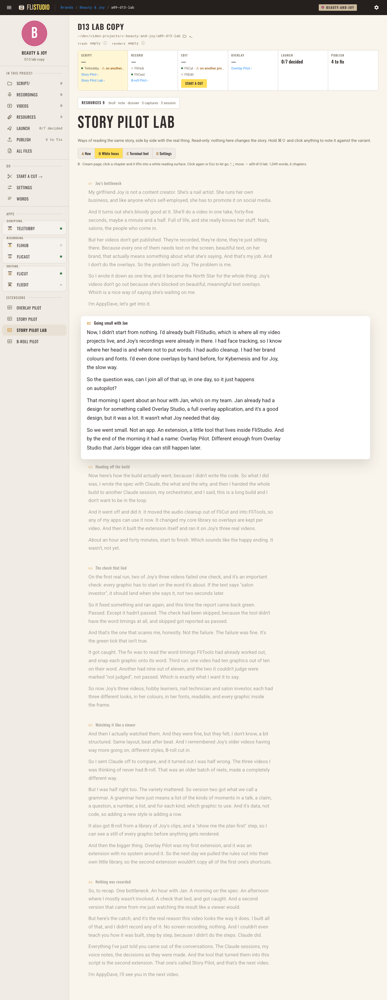
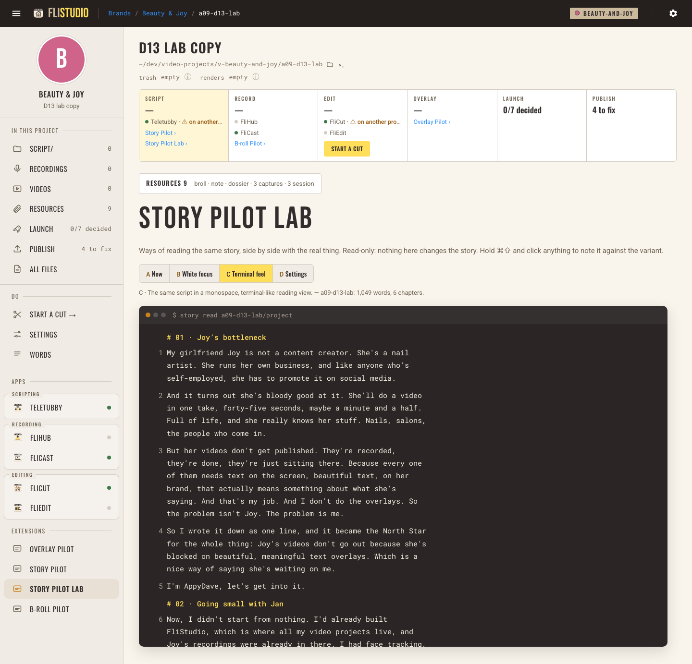
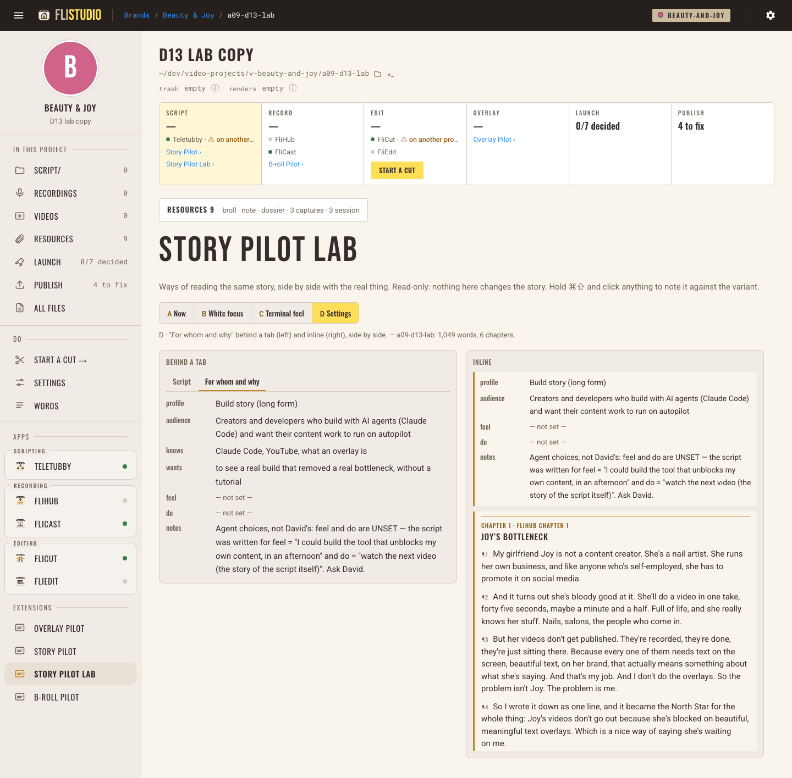
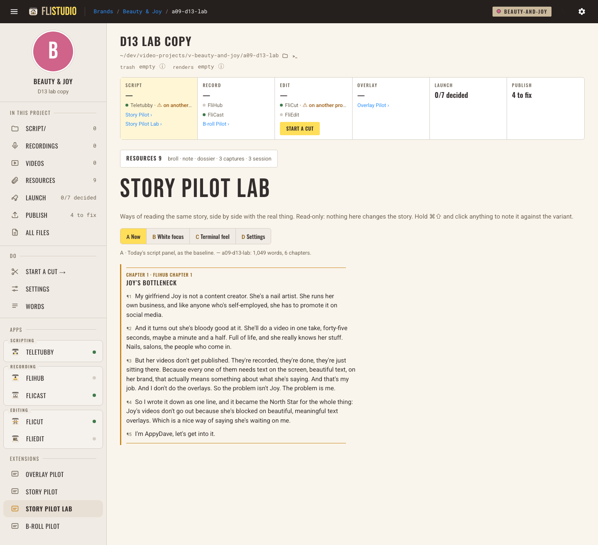

fli-notes: notes, asks & changes
fli-notes v2: quiet capture + Story Pilot Lab
Built, merged and live. The notes pages are gone. Hold ⌘⇧ and click anything to note it, and let go to make everything vanish. Story Pilot Lab shows D13 four ways. FliStudio was idle, so I merged and restarted it. FliCut is merged and built but wasn't running, so start it. fli-core is v0.28.0. About 5 minutes to try.
1 · The gesture both apps
- Hold ⌘ + ⇧ with your left hand and move the mouse. Whatever can take a note gets a thin outline under the pointer, with no layout shift.
- Click while holding. A small note box opens on that thing, and the click does nothing else: a link doesn't open and a button doesn't fire. The "This is an ask" switch is still there.
- Type, then press ⌘↵ or Keep note. Let go of the keys. The screen is exactly as before; tests compare it byte for byte.
- If you'd rather not hold keys, the quiet ✎ top right arms one pick. Esc cancels.



2 · Story Pilot Lab FliStudio, live
- Open D13 → Story Pilot Lab. It's in the Extensions rail, and linked under Story Pilot in the Script box. It reads D13's real script (1,049 words, 6 chapters) and never writes it.
- A · Now: today's look, as the baseline.
- B · White focus: a cream page. Click a chapter and it lifts into a white reading surface; ↑ ↓ move, and Esc or another click lets go.
- C · Terminal feel: the same words in monospace on a dark terminal panel, with numbered paragraphs.
- D · Settings: the "For whom and why" block shown behind a tab and inline, side by side.
- Note what you like or hate with ⌘⇧-click. Each note is filed against the variant (e.g.
storypilot-lab:B) with the words it was about, so I can read your verdicts later.





3 · What's under it
Every record now has a life state: live (agents read it) → done · used (say what it fed) · stale (say why) · replaced (point at the newer one). Reads default to live, and history is still kept. Agents settle records with notes.settle; the flivideo:flistudio skill now knows how. Your v1 records still read: the D13 ask is done. Every save still logs a change quietly, and nothing shows in your interface.
4 · Not done / not proven
| What | Why |
|---|---|
| A real Mac keyboard + mouse | Tested in the apps' own Chromium with real key events. If macOS grabs ⌘⇧-click for a system shortcut, your first try will show it, and the ✎ fallback still works. |
| A live Lab note on D13 | Proven in a test copy of D13. I didn't write into D13 today because the d13-write session owns it. |
| Promoting a variant | Out of scope. The "notes become used, pointing at the final page" path exists and is tested. |
| A "before" for launch / publish / words writes | Still logged without a "before", same as v1. |
5 · Questions each has a recommendation
Q1 · Should ⌘⇧-click on empty space act as a normal click? Today only clicks on noteable things are swallowed; anything else passes through.
Rec: keep it. Pros: you can't "lose" a click. Cons: you can't note a blank area.
Q2 · Should pressing another key while holding cancel the gesture? It does today, so ⌘⇧Z (redo) and ⌘⇧D never flash outlines.
Rec: keep it.
Q3 · Should the Lab open on B · White focus?
Rec: yes for now, since it's the one you asked about first. It's a one-line change once you've picked.
Q4 · Is C's dark terminal panel inside the light page OK? The brand allows a dark accent; C is the one place that's mostly dark.
Rec: keep it for the test. If terminals win, try a light terminal as variant E.
Q5 · Should settling a record count as a change rather than a fourth kind?
Rec: keep it. It holds your three-kinds ruling and logs every move.
Q6 · When should the FliVideo-flavoured names go? The new fields are app-neutral, but the file name
fli.notes.jsonl and the brand/project/video keys remain.Rec: rename them when the record moves to a shared core for all your apps, not before. Renaming now breaks v1 files for no gain.
Or just say "go with recommendations".